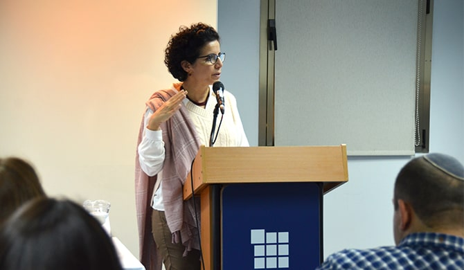

A joint study day for fellows of the Mandel Leadership Institute provided an opportunity for fruitful learning encounters and dialogue and enabled fellows to discuss questions of relevance to us all from different perspectives. Attended by approximately 70 fellows and faculty, the study day examined central issues that will shape the future of Israeli society and enabled the fellows to discuss the implications for both their day-to-day work and for the lives of all Israelis.

The day began with a talk by Yuval Malchi, lecturer in history and podcaster, who presented some of the futuristic changes underway, which are changing how we think about the future and how we act today: How close are we to the day when humans no longer drive? How will drones affect our ability to save lives and take lives? When will anti-aging pills be available? Will we soon be able to live forever?
Following this opening lecture, the fellows split into mixed groups that included fellows from the Mandel Program for Developing Leadership for the Haredi Community, the Mandel Youth Leadership Program, and the Mandel IDF Educational Leadership Program. Each group focused on a different aspect of the central topic of the study day and worked with relevant experts, who discussed with them the main issues and their implications. The groups included the following:
Burning issues of the future: The future of Israel in an increasingly hotter and dryer Middle East – In this group, led by
Dr. Amichai Amit, the sociologist
Professor Dan Rabinowitz examined the climate crisis, which the United Nations General Assembly recently deemed the defining challenge of our times. The lecture focused on a review of current and expected changes in Israel and the world, as well as the huge challenges they will bring. The group discussion included an examination of activities necessary in the field of education in order to meet these challenges and to make the most of the opportunities afforded by the climate crisis.

Occupations of the future: Employment, schooling, and higher education in a world of constant change – In this group, led by Dr. Noa Apeloig, leading entrepreneur Dr. Eitan Eliram, CEO of Interactive Innovation Ltd., presented the changes currently affecting the labor market in the wake of the technological revolution. The fellows explored the ways in which the accelerated rate of change in the labor market may affect learning patterns and training for tomorrow’s occupations in future generations. They also discussed the effects of the future labor market on the structure and character of schools and on the pedagogical methods they use.
A small and crowded country: The impact of demography on the future of Israeli society – By the middle of the 21st century, Israel’s population is expected to double, and the country will become one of the most crowded places on earth. In this group, led by Dr. Yaron Girsh, demographer Dr. Ahmad Hleihel, senior deputy director of the division of demography and census at the Central Bureau of Statistics, presented Israel's population forecasts for the next 50 years. The group explored the impact of this rapid growth on the character of the state and on its ability to provide services in the fields of transportation, education, employment, health, and housing.

The Übermensch and the golem: Toward engineered human beings – This group, led by Dr. Jeremy Fogel, heard a presentation by Dr. Liat Yakir, a specialist in molecular genetics. She introduced the fellows to recent technological advancements that will enable innovative treatments for a range of diseases in the coming years. She also discussed preventative genetic treatments that will ensure the good health of newborn babies. The group considered the future of the human race and the ethical implications of the possibilities raised by these new developments.
The study day closed with a session in which
Uri Aviv, director of the Utopia international festival for science fiction film, explored the ways in which Israeli filmmakers imagine the future of the State and Israeli society.
As leaders in the fields of education and society, the fellows noted the necessity of cross-sector planning and action in their professional arenas and in broader areas. They also discussed the great importance of examining the changes in values and ethics that the future may bring. The fellows emphasized the importance of engaging together in explorations of issues of national and even global importance.
The fellows also commented on the diversity and richness of the individuals and views that they encountered during the study day. “The day was fascinating,” said one of the fellows. “It opened up a world with which I have little interaction on a daily basis, but which I know is relevant and important for me," she continued. "I very much liked the personal dialogue that was created between the members of the different groups.”
One of the main lessons cited by the fellows of the Institute's various programs was the understanding that Israel’s diverse social groups must engage in collaborative and flexible thinking, and look beyond their respective narrow group interests. As one of the fellows summarized it: “Flexibility, flexibility, and again, flexibility. In an age of changing realities, the challenge is to open our minds and our hearts in order to learn how to cope with these inevitable changes and how to utilize them for our benefit, responding to them in the most constructive and restorative way possible.”

{kind=link}
{kind=link}